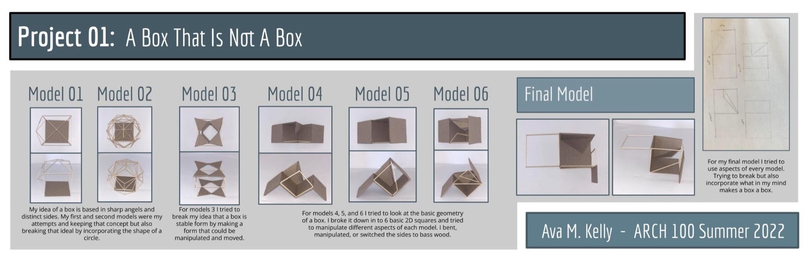
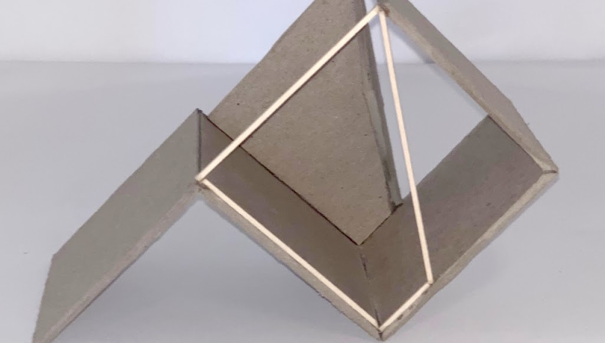
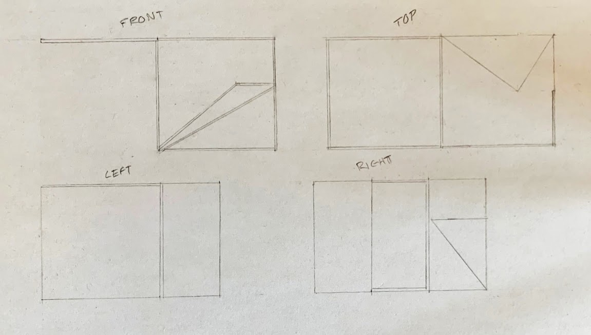
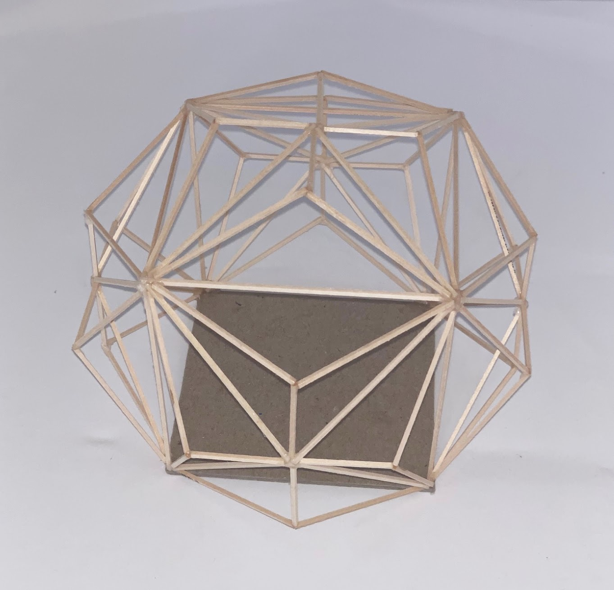
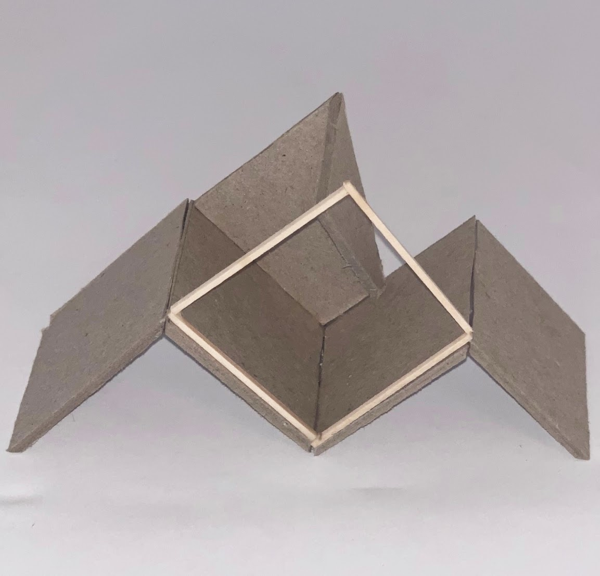
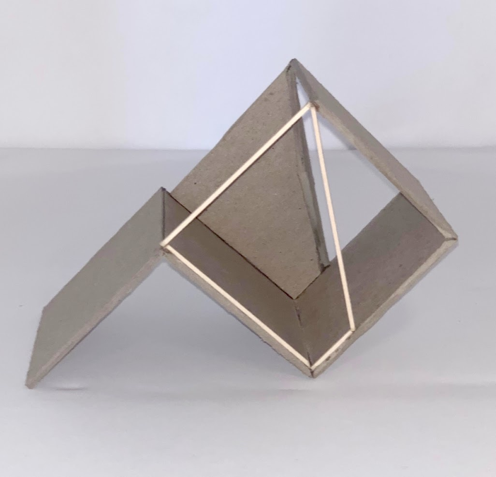

A Box That Is Not A Box
Project 01: what makes a box a box, explored through six models and a final model.
My idea of a box is based in sharp angles and distinct sides. My first and second models were my attempts and keeping that concept but also breaking that ideal by incorporating the shape of a circle.
For models 3 I tried to break my idea that a box is stable form by making a form that could be manipulated and moved.
For models 4, 5, and 6 I tried to look at the basic geometry of a box. I broke it down in to 6 basic 2D squares and tried to manipulate different aspects of each model. I bent, manipulated, or switched the sides to bass wood.
For my final model I tried to use aspects of every model. Trying to break but also incorporate what in my mind makes a box a box.






